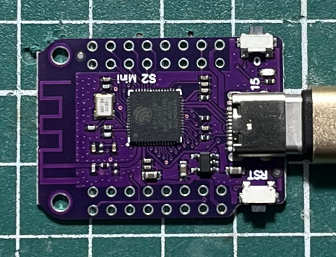
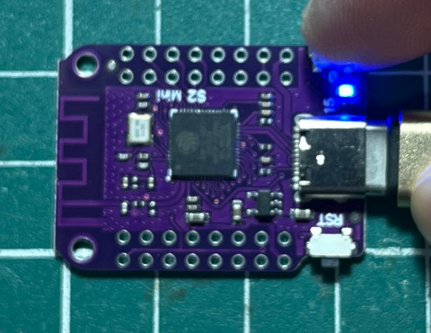

參考資訊：
https://www.wemos.cc/en/latest/s2/s2_mini.html
https://arduino.github.io/arduino-cli/0.31/installation/
步驟如下：
1. 連接ESP32 S2 Mini到PC
2. 按住BOOT按鈕後，再按下RST按鈕，進入下載模式
3. 執行如下命令
$ cd $ arduino-cli sketch new blink $ vim blink/blink.ino
#define LED 15
#define BTN 0
void setup() {
pinMode(LED, OUTPUT);
pinMode(BTN, INPUT_PULLUP);
}
void loop() {
digitalWrite(LED, digitalRead(BTN) ? LOW : HIGH);
}
$ arduino-cli compile --fqbn esp32:esp32:esp32s2 blink
$ arduino-cli board list
Port Protocol Type Board Name FQBN Core
/dev/ttyACM0 serial Serial Port (USB) ESP32S2 Dev Module esp32:esp32:esp32s2 esp32:esp32
$ arduino-cli upload --port /dev/ttyACM0 --fqbn esp32:esp32:esp32s2 blink
esptool.py v4.6
Serial port /dev/ttyACM0
Connecting...
Chip is ESP32-S2FNR2 (revision v1.0)
Features: WiFi, Embedded Flash 4MB, Embedded PSRAM 2MB, ADC and temperature sensor calibration in BLK2 of efuse V2
Crystal is 40MHz
MAC: 80:65:99:fd:c0:22
Uploading stub...
Running stub...
Stub running...
Changing baud rate to 921600
Changed.
Configuring flash size...
Flash will be erased from 0x00001000 to 0x00005fff...
Flash will be erased from 0x00008000 to 0x00008fff...
Flash will be erased from 0x0000e000 to 0x0000ffff...
Flash will be erased from 0x00010000 to 0x0004efff...
Compressed 20352 bytes to 13445...
Writing at 0x00001000... (14 %)
Writing at 0x0000223c... (28 %)
Writing at 0x00002d3c... (42 %)
Writing at 0x000038e6... (57 %)
Writing at 0x00004304... (71 %)
Writing at 0x00004c9a... (85 %)
Writing at 0x0000590e... (100 %)
Wrote 20352 bytes (13445 compressed) at 0x00001000 in 0.3 seconds (effective 623.7 kbit/s)...
Hash of data verified.
Compressed 3072 bytes to 146...
Writing at 0x00008000... (100 %)
Wrote 3072 bytes (146 compressed) at 0x00008000 in 0.0 seconds (effective 535.7 kbit/s)...
Hash of data verified.
Compressed 8192 bytes to 47...
Writing at 0x0000e000... (100 %)
Wrote 8192 bytes (47 compressed) at 0x0000e000 in 0.1 seconds (effective 718.2 kbit/s)...
Hash of data verified.
Compressed 257328 bytes to 145355...
Writing at 0x00010000... (1 %)
Writing at 0x00011193... (2 %)
Writing at 0x000129b6... (4 %)
Writing at 0x00013fd1... (5 %)
Writing at 0x00015a33... (7 %)
Writing at 0x000173dc... (8 %)
Writing at 0x00018896... (9 %)
Writing at 0x0001a69d... (11 %)
Writing at 0x0001bcd7... (12 %)
Writing at 0x0001e520... (14 %)
Writing at 0x000201fc... (15 %)
Writing at 0x00020ea9... (16 %)
Writing at 0x00021942... (18 %)
Writing at 0x000222fb... (19 %)
Writing at 0x00022da6... (21 %)
Writing at 0x00023818... (22 %)
Writing at 0x00024419... (23 %)
Writing at 0x00024e99... (25 %)
Writing at 0x00025928... (26 %)
Writing at 0x00026448... (28 %)
Writing at 0x00026e63... (29 %)
Writing at 0x000277d5... (30 %)
Writing at 0x000281e1... (32 %)
Writing at 0x00028c88... (33 %)
Writing at 0x00029751... (35 %)
Writing at 0x0002a0a7... (36 %)
Writing at 0x0002abc3... (38 %)
Writing at 0x0002b5c1... (39 %)
Writing at 0x0002c000... (40 %)
Writing at 0x0002c9b0... (42 %)
Writing at 0x0002d4bf... (43 %)
Writing at 0x0002ded0... (45 %)
Writing at 0x0002e8cc... (46 %)
Writing at 0x0002f2f2... (47 %)
Writing at 0x0002fee5... (49 %)
Writing at 0x00030899... (50 %)
Writing at 0x0003124e... (52 %)
Writing at 0x00031d04... (53 %)
Writing at 0x0003289c... (54 %)
Writing at 0x000332cd... (56 %)
Writing at 0x00033d98... (57 %)
Writing at 0x000347ed... (59 %)
Writing at 0x000352b2... (60 %)
Writing at 0x00035f01... (61 %)
Writing at 0x000374b1... (63 %)
Writing at 0x000383fe... (64 %)
Writing at 0x0003af35... (66 %)
Writing at 0x0003bd7a... (67 %)
Writing at 0x0003c7a9... (69 %)
Writing at 0x0003d096... (70 %)
Writing at 0x0003e07d... (71 %)
Writing at 0x0003f427... (73 %)
Writing at 0x00041853... (74 %)
Writing at 0x00042582... (76 %)
Writing at 0x00043195... (77 %)
Writing at 0x00043ceb... (78 %)
Writing at 0x00044747... (80 %)
Writing at 0x0004512c... (81 %)
Writing at 0x00045b15... (83 %)
Writing at 0x0004668e... (84 %)
Writing at 0x0004720f... (85 %)
Writing at 0x00047d9f... (87 %)
Writing at 0x000487ae... (88 %)
Writing at 0x00049263... (90 %)
Writing at 0x00049d57... (91 %)
Writing at 0x0004a79b... (92 %)
Writing at 0x0004b247... (94 %)
Writing at 0x0004bfdc... (95 %)
Writing at 0x0004cc62... (97 %)
Writing at 0x0004d5b4... (98 %)
Writing at 0x0004e081... (100 %)
Wrote 257328 bytes (145355 compressed) at 0x00010000 in 2.1 seconds (effective 966.4 kbit/s)...
Hash of data verified.
Leaving...
WARNING: ESP32-S2FNR2 (revision v1.0) chip was placed into download mode using GPIO0.
esptool.py can not exit the download mode over USB. To run the app, reset the chip manually.
To suppress this note, set --after option to 'no_reset'.
Failed uploading: uploading error: exit status 1
按下RST按鈕後，就可以開始測試

